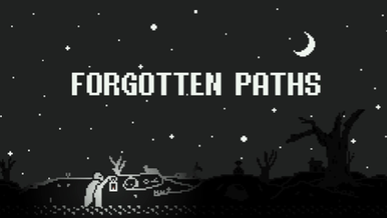

A looping puzzle game made for the GMTK Game Jam 2025. Define a sequence of movement commands and watch them loop. Figure out the right sequence to kill every enemy, or get stuck forever.
Currently being expanded into a full release.



Take out every enemy on the level. Your movement sequence loops endlessly. Levels also introduce rotation, which adds another layer to the puzzle. If you're truly stuck, there's a hints and solutions cheat sheet on the itch.io page. Make it to the end and you're rewarded with a super cool final cutscene.
 itch
itch